How to use Heimdall III @@VERSION@@
Worked examples, one per feature, on the benchmarks hosted here. Each has the question it answers, the steps, screenshots with what to notice, and a link that opens the viewer in that exact state (the link sets the state through URL parameters, listed in the help page). For every control and key, see Help; for the benchmarks, the index.
The viewer needs a browser with WebGL. Drag to rotate, right-drag to pan, wheel to zoom, click to select. Click empty space to clear the selection. Every picture below is a real screenshot of the viewer on the benchmark named above it, taken with the link beside it.
What's new (v0.7)
- Compare any two selections. In Graph analytics, Compare any two selections signs two selections of one plane and gives GDD agreement and the cosine of log(1 + orbit totals), for the undirected and the directed graphlets. A selection can be the current selection (HDL lines, objects, paths), a snapshot you saved with the button, a group, or a cluster. It runs in the browser; the metric code is Odin III's, ported to JavaScript and pinned to Odin III by tests. The panel shows how many objects each selection has, how many are on the chosen plane, how many have no graphlet data (counted, not signed) and how many are on other planes. Members are signed with their counts on the whole plane graph, so a cluster here can differ a little from the cluster signatures above, which count each cluster on its own subgraph.
- Switching activity. The FPGA and silicon pages of three designs (mmuart, verilog_cordic_core, wb_lcd) have a new left-hand section, Switching activity (Bifrost III power). It colours every plane by how often each net is high (static probability), how often it toggles per clock cycle (transition density) and, where Bifrost gives it, power. A table lists the HDL lines by power, and a click on a line selects it as usual. The section names the activity source (here: the design's own testbench run on the post-synthesis netlist in iverilog) and states the limits: the FPGA split per line is a model, the silicon split is per instance, and clock power is a lower bound. Pages without data say so. The details are in help.
What's new (update 6.1): affinity propagation fix
- Affinity propagation fixed. On larger pages the affinity propagation clustering could stop early and return a single cluster for the whole plane. It now converges properly, so these pages show real clusters. A plane whose nodes all have the same signature still gives one cluster, which is correct.
What's new (update 6)
- Graph analytics. The left panel has a new section, Graph analytics (Odin III graphlets). Orbit heat colours every plane by how often each node sits at one chosen position of a small graph pattern; clustering groups nodes with the same structure (k-means, affinity propagation) and a click on a cluster lights it up on all planes and in the HDL like any group; two clusters can be compared by their signatures. The details are in help.
- Graphlet types. A table of the counts of each pattern, rare first. Listing the instances of one pattern waits for an Odin III addition.
What's new (update 5)
- ASIC planes. Seven OpenCores designs now also have a
silicon-page: the Odin III to OpenROAD to GDS flow on sky130. The planes are the HDL, the standard cells (stdcell), the placed die in micrometres (die) and the routed nets (route). Click an HDL line and its cells light up on the die. - Where cells go. The die plane is the final legal placement from the DEF; the anchor
globalshows it before legalisation. The placement steps are explained in the help page. See example 12 below.
What's new (update 4)
- Rainbow lines. Drag over two or more HDL lines: the first is red, the last violet. Everything each line became, on every plane, takes its colour; an object that comes from several lines is a pie; flip-flops are white.
- Bit squares. The new Bits box puts a small square on each selected object that has a bus bit: red is the least significant bit, violet the most significant.
- Reverse groups. Shift-click objects in 3D to start groups, each in its own colour (Shift+Alt-click adds to the last group). The HDL lines they came from take the colours; a line shared by groups shows one bar per group. Esc clears.
- Bit order fixed for buses not declared
[N:0]. See example 11 below, and the help page.
1. Select HDL lines and see what they become on every plane
Design: bm_DL_74381_ALU (a 4-bit ALU, a micro from Odin III)
Question. Where did this line of my Verilog end up: which cells, LUTs, clusters and placed atoms come from it?
- Open the viewer. The HDL pane is at the left, the stack of planes in the middle.
- Click line 13,
3'b011: F = A + B;. The line turns blue; the part of the source that belongs to the samecasegets a tint. - Look at the stack. The objects linked to the line are lit on every plane; the rest is dimmed.
- Read the right panel, Linked objects per plane: one count per plane, each with a focus button.
- Tick include enclosing constructs (or click line 9, the
caseheader, with the box ticked) to take the wholealwaysblock and the case, not just the innermost construct.
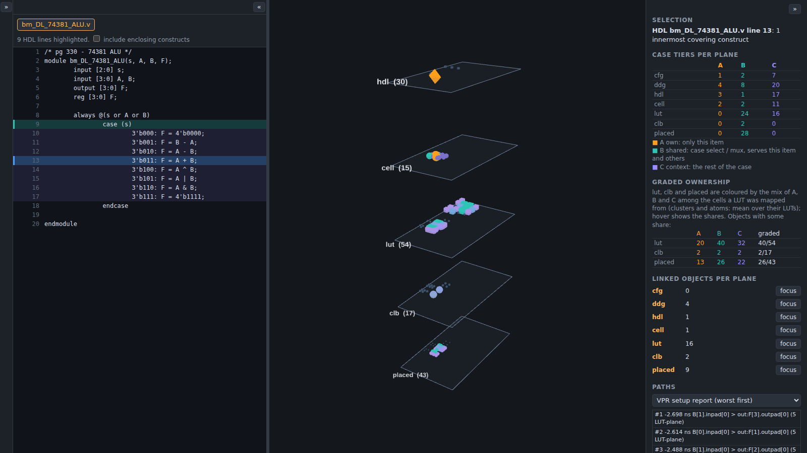
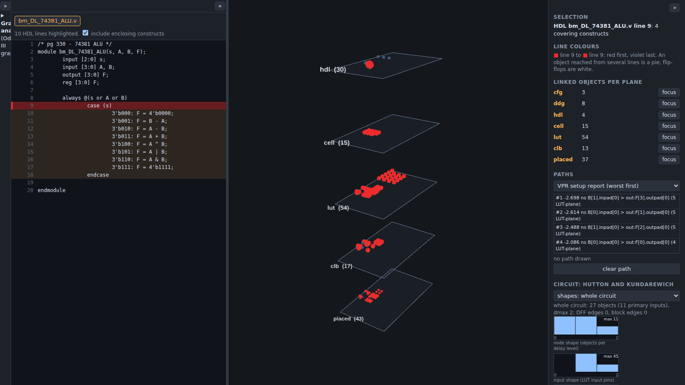
case (s)) with include enclosing constructs ticked: the whole case lights the 15 cells, 54 LUT-plane objects, 13 clusters and 37 placed atoms, which is the logic of the whole design. (open this view)Idea. A line that owns many LUTs is a candidate for a closer look. A line that owns none was removed or merged by synthesis. Compare the count of a short line with the count of its whole block to see how much logic one statement carries.
2. Case tiers A, B, C, and the effect of FSM recoding
Design: bm_DL_74381_ALU (a case with eight items) and ch_intrinsics (a state machine with sixteen states)
Question. Which logic belongs only to one case item (A), which is shared by the case (B), and which serves the other items (C)? And what happens to that split after synthesis recodes the state?
- Open the ALU and click line 12,
3'b010: F = A - B;, an item of thecase. - The source pane shows the item in blue, the case header (line 9) in teal and the other items in a light tint.
- Focus the
cellplane (key 2 or its focus button in the right panel). Orange cells are tier A (own), teal are tier B (shared select and mux logic), violet are tier C (context). - Focus the
lutplane (key 3). A LUT is coloured by the graded mix: the share of A, B and C among the cells it came from, so most LUTs blend several colours. - Now open
ch_intrinsicsand click line 165 (var0 <= ..., inside the item4'b0001ofcase(cur_state)). Compare the cell plane with the lut plane. - Read the table Case tiers per plane.
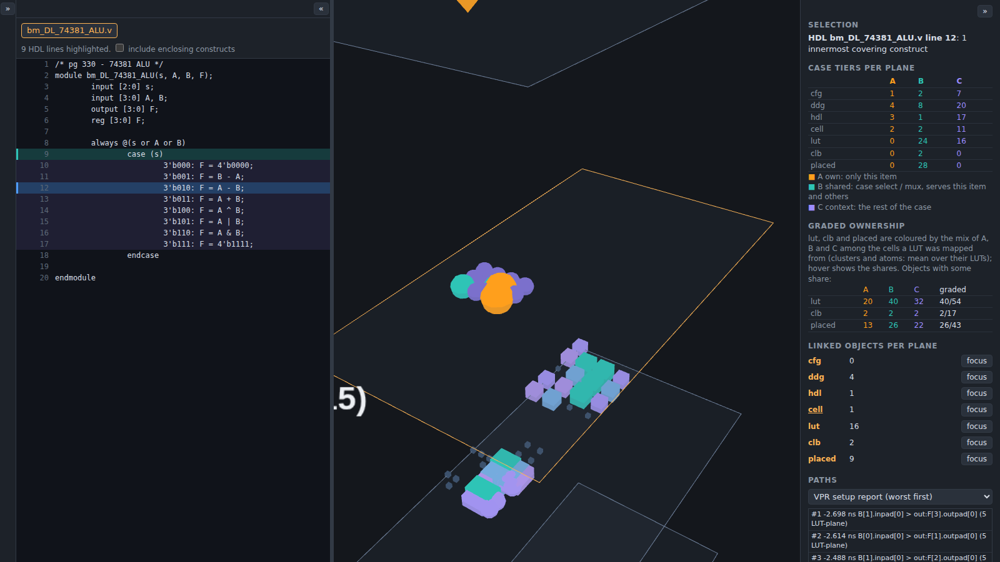
F = A - B (2 cells). Teal: shared. Violet: the other seven items. The table counts A, B and C per plane. (open this view)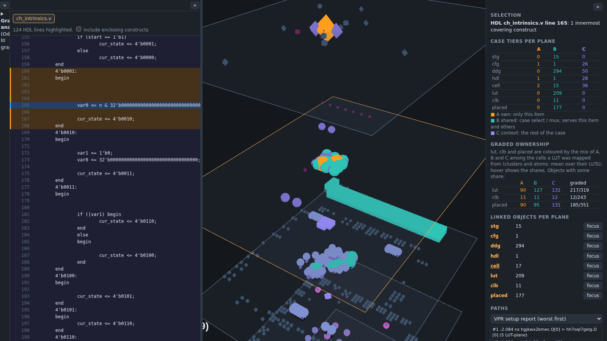
ch_intrinsics, cell plane. The tiers are exact here: 2 own cells (orange), 15 shared (teal), 36 context (violet). (open this view)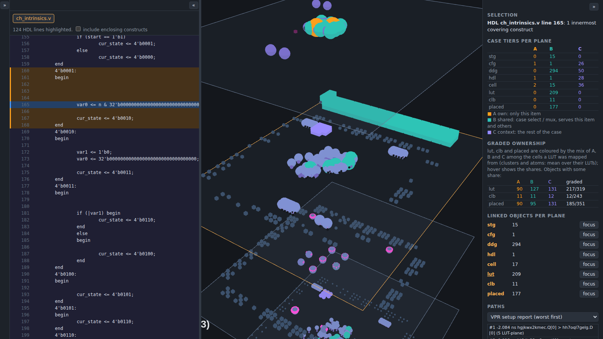
ch_intrinsics, lut plane. The table says lut: A 0, B 209, C 0. Every LUT of the case is tier B; the item has lost its own LUTs. (open this view)Idea. Odin III's FSM pass recodes the state variable (here cur_state becomes one-hot) and merges the case items after mapping. The cell plane still shows the items, but on lut, clb and placed each LUT carries the HDL spans of all the items, so any item looks shared. When the own (A) share is large on the cell plane and zero on the lut plane, the recoding or the logic merge did it, and a per-item study of the mapped netlist needs care.
3. Flip-flops and buses
Design: bm_DL_4_bit_shift_register (four muxdff stages) and Prob141_count_clock (a BCD clock with buses hh, mm, ss)
Question. Which objects are the registers, where is each one on every plane, and which objects belong to one bus?
- Open the shift register. In the left panel, set Flip-flops to highlight FFs. The pink cubes are the flip-flops.
- Click line 19,
reg Q;, the declaration of the register. The viewer selects the flip-flops of that register on every plane. - Set Flip-flops to FFs only (others dimmed) to see only the registers, and where they sit.
- Open the clock design and set Colour to bus (hue per bus, shade per bit). The legend lists each bus, its width and its object count.
- Click a bus in the legend, for example
ss. Its objects are selected on every plane and its declaration line (line 9) is marked.
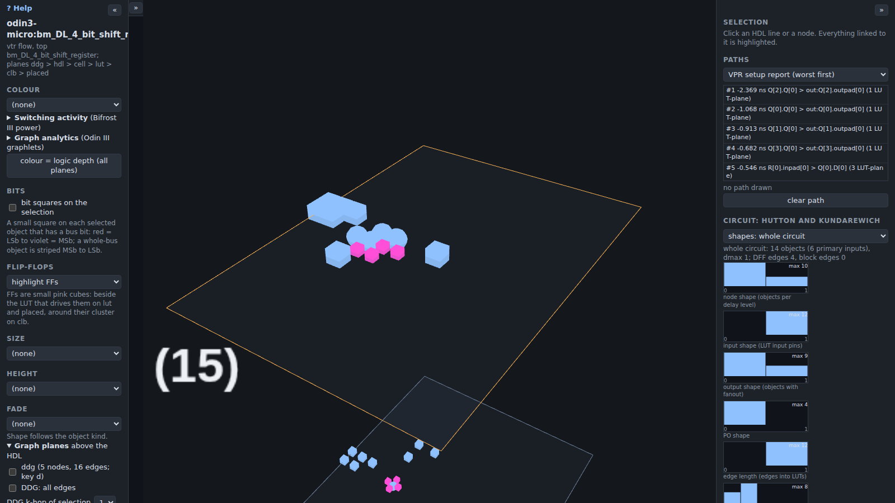
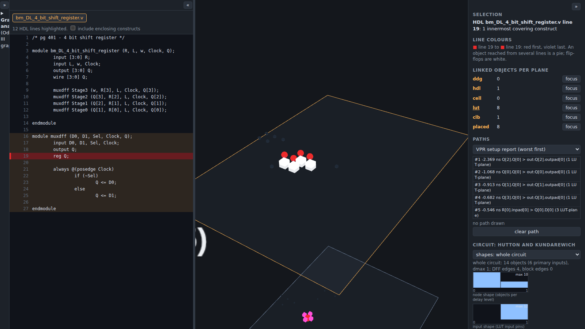
reg Q;) selected, FFs only: the registers of Q stand out on the lut plane. (open this view)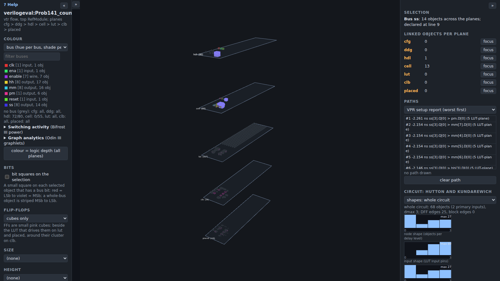
ss selected: 14 objects, mostly cells. The grey note in the legend says on which planes no bus name was found; on the lut plane the net names carry none here, and the viewer shows grey rather than guess. (open this view)Idea. A register that fans out to many LUTs, or a bus whose bits sit far apart on the placed plane, is a place to look for timing or routing trouble. Check how many of the register's objects reach the lut plane before you trust a bus colour there.
4. Colour by logic depth, and by SCOAP CC0, CC1 and CO
Design: bm_lpm_all (adders, subtractors, comparators and shifters) for both views
Question. Which logic is deep (slow) and which logic is hard to test?
- Open the design. In the left panel press colour = logic depth (all planes). The metric is
logic_level: the number of LUTs on the longest path from an input or a register output to this object. - Read the legend: yellow is the deepest, purple the shallowest. Grey means no measured value. The line under the legend says how many objects of each plane have a value.
- Now use colour = SCOAP with joins in the left panel. Choose CO and max, then press the button. Every plane is coloured: an object's own value where Odin III's
scoappass measured it, else the max over the linked objects that have one. - Repeat with CC0 (and CC1) to see how hard it is to force the object to 0 (or 1).
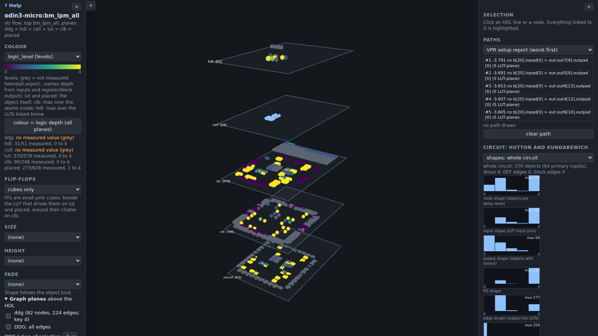
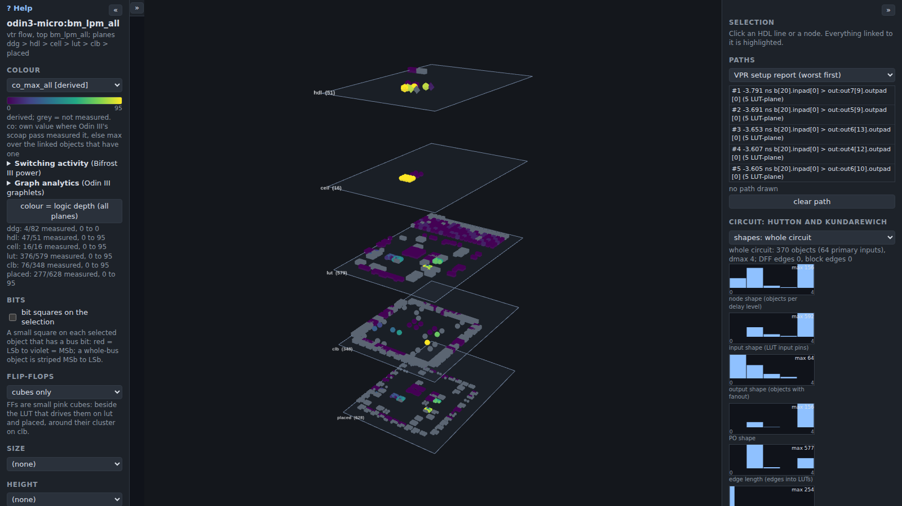
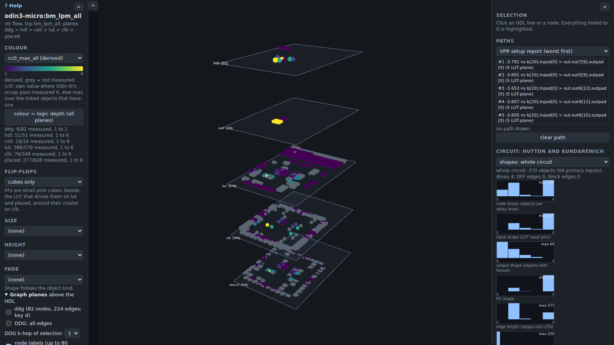
Idea. Deep logic is where the timing is lost; high CC0, CC1 or CO is where a test would struggle, or where a hidden change would be hard to catch. Look for an object that is both deep and hard to observe, and click it to read the HDL line behind it. SCOAP is a static estimate. It is a structural number, not a measurement of silicon.
5. Paths: the worst VPR path, and the logic into and out of a selection
Design: sha (the VTR SHA-1 benchmark)
Question. Where is the slowest path, which HDL lines does it come from, and what logic feeds a register or reads from it?
- Open
sha. In the right panel, the Paths list shows VPR's reported setup paths, worst slack first. Click #1 (slack -10.135 ns). - The path is drawn through the lut and placed planes, and its HDL lines are highlighted in the source pane. The source of the data is named in the panel.
- Colour by
slack_worst(Colour menu). Red is negative slack (all of the 100 reported paths ofshaare negative). Only objects on those paths have a value; the rest stay grey. - For a cone, click an object (or pass its id in the link), set Paths to netlist cone of the selection, choose fan-in, fan-out or both, and set a depth limit. The cone stops at flip-flops, I/O and hard blocks.
- Fan-in shows the logic that feeds the object. Fan-out shows what it drives.
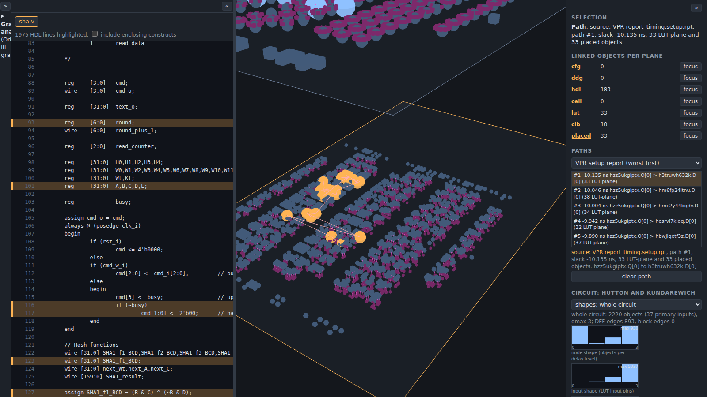
sha on the placed plane: 33 LUT-plane objects, 33 placed objects, from hzz5ukgiptx.Q[0] to h3truwh632k.D[0]. The orange lines in the source pane are the lines it comes from. (open this view)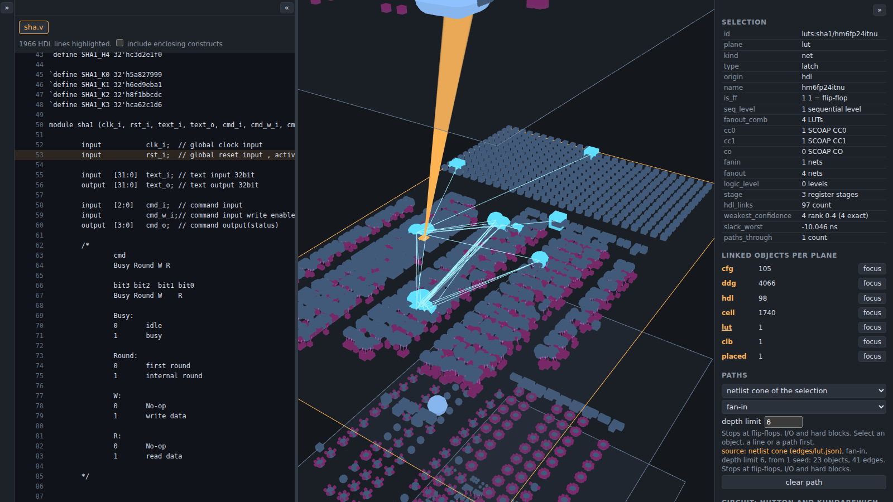
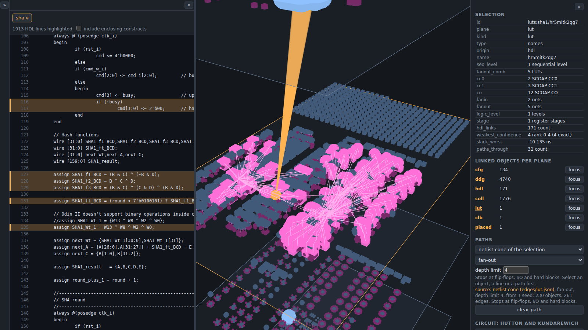
Idea. A path crossing many clusters on the placed plane suggests that placement, not logic depth, costs the time. Compare the fan-in cone of the path's end with its fan-out cone: a narrow cone into a wide one shows a register that many things wait for.
6. The graph planes: STG, CFG and DDG
Design: ch_intrinsics (STG, CFG) and Prob141_count_clock (DDG)
Question. What does the design look like before it becomes gates: its states, its control flow, its data flow?
- Press s to show the STG plane. It joins the stack above the HDL plane and takes focus. Press s again to hide it.
- Each node is a state of the state machine, labelled with its code; each edge is a transition, labelled with its condition.
- Press c for the CFG plane: per process, the entry, switch, case, join and exit nodes.
- Press d for the DDG plane (data dependences). Click an HDL line, and the DDG edges within k hops of the selection are drawn (tick DDG: all edges for all of them, which is slow on a big design).
- Click a graph node: its HDL lines and its linked objects on the other planes light up.
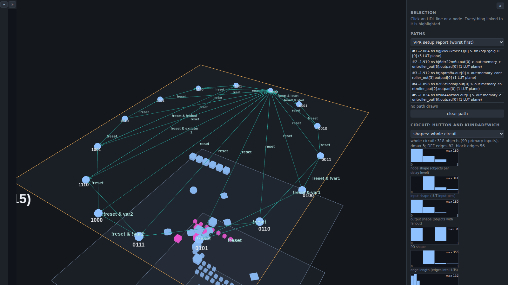
ch_intrinsics: 15 states (state codes), transitions labelled with their conditions such as !reset and !reset & !var2. (open this view)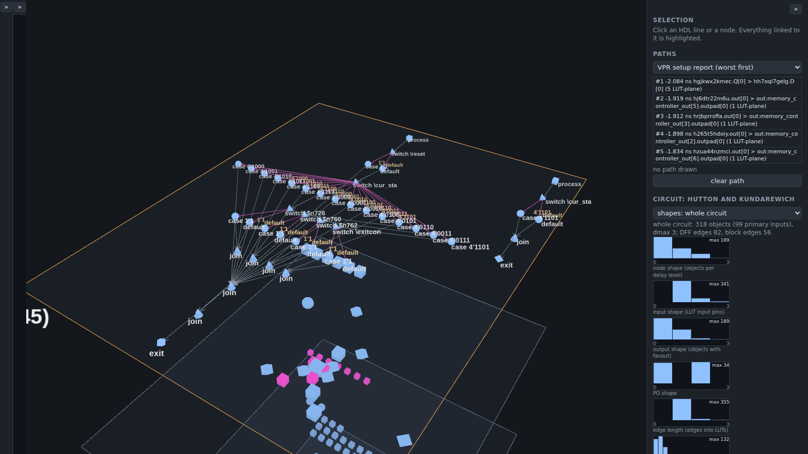
ch_intrinsics: switch nodes fan out to case nodes that rejoin at join nodes, ending at exit. (open this view)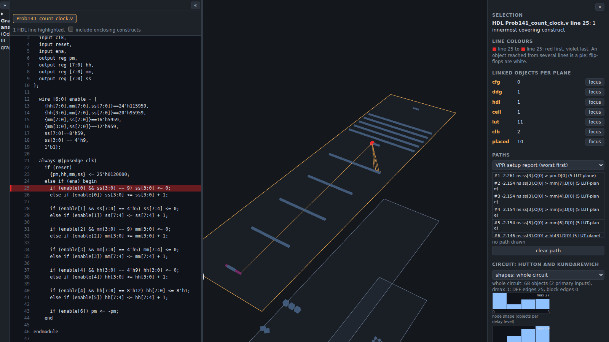
Prob141_count_clock with line 25 selected (the update of ss[3:0]): the edges within one hop of the selection are drawn. (open this view)Idea. The STG tells you how many states Odin III saw and how they connect, before any recoding. A state with many edges is a hub (here state 0000, the reset state). Compare the STG with the lut plane to see which part of the netlist implements a state.
7. The Hutton view: the shape of the circuit
Design: sha
Question. What shape does the circuit have: how many nodes at each delay level, how long are its edges?
- Open
shaand set Anchor to hutton. The x axis becomes the delay level; flip-flops sit at level 0 beside the primary inputs. - Set Colour to role (flip-flop, latched node, primary output). The legend explains the colours.
- Scroll the right panel to Circuit: Hutton and Kundarewich. Read the shape histograms: node shape (objects per delay level), input shape, output shape, PO shape, edge length and fanout.
- Choose shapes: selection to give an HDL line's logic its own shape, and compare it with the whole circuit.
- Set Edges to circuit edges by length to colour the lut-plane edges by length (pink is length 0, an edge into a flip-flop).
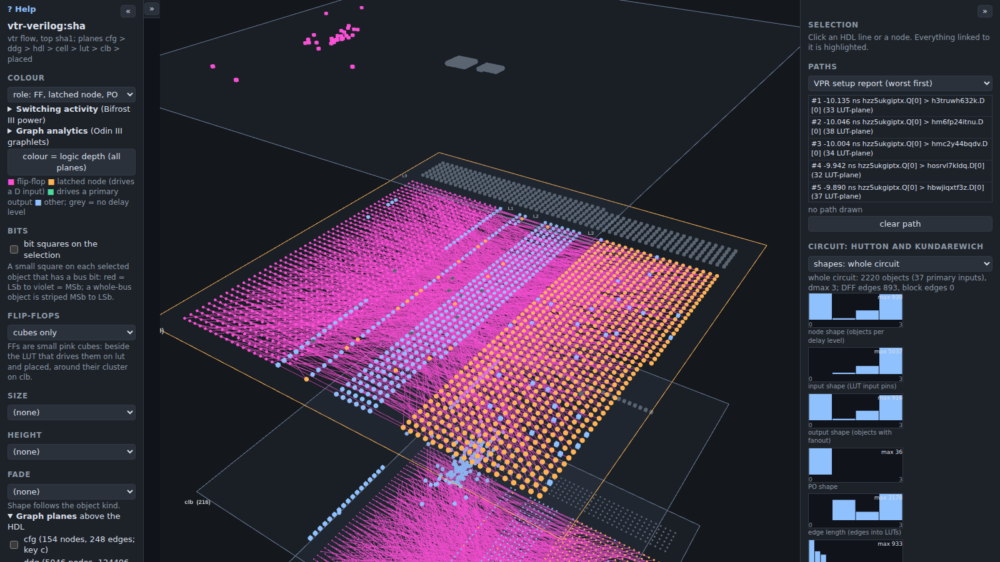
sha in the hutton anchor, colour = role. Pink: flip-flops at level 0. Orange: latched nodes (they drive a D input). Blue: other nodes. The columns L0 to L3 are the delay levels. (open this view)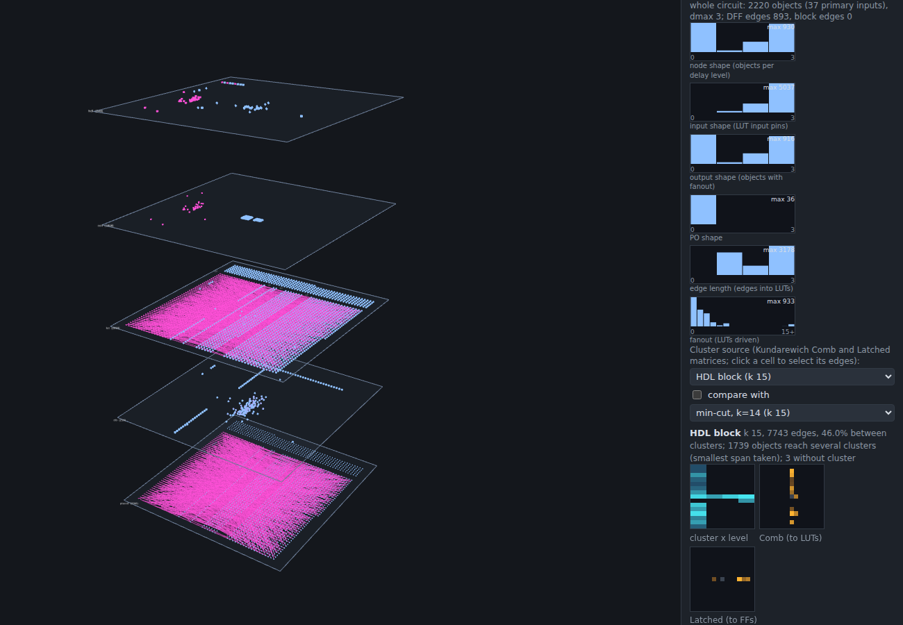
Idea. The shapes follow Hutton, Rose, Grossman and Corneil's characterisation of circuits: a circuit is described by its node, input, output and PO shapes and its fanout and edge-length distributions. They describe; they test no hypothesis. Compare a small micro with sha to see how different the shapes are.
8. The Kundarewich view: Comb and Latched matrices
Design: sha
Question. Does the HDL hierarchy match the connectivity of the circuit?
- Open
shaand set Anchor to kundarewich-hdl-block: one strip per cluster. The Cluster source in the right panel is HDL block. - In the right panel read the line under the source: the number of clusters, the edges and the share between clusters.
- Read the matrices. Comb[i][j] counts edges from cluster i that drive combinational nodes in cluster j; Latched[i][j] those that drive flip-flops. The diagonal is dim.
- Click a bright cell of the Comb matrix. Its edges are drawn in yellow, and their endpoints and HDL lines are selected.
- Tick compare with and choose mincut: both partitions side by side, with their normalised mutual information.
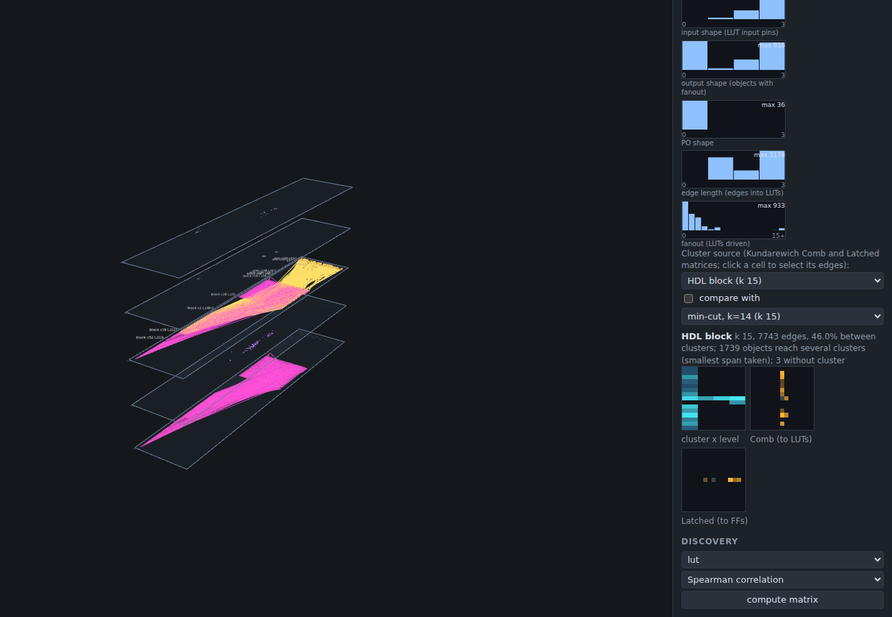
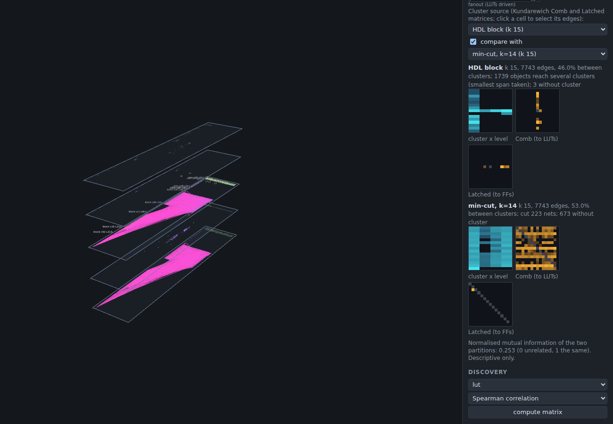
Idea. A low mutual information says the HDL hierarchy is a poor guide to the connectivity: the min-cut groups logic the author kept apart. A one-column Comb matrix says one cluster takes most of the edges; on sha that cluster is a one-line block holding 1739 objects, and the help page's known limits explain that on a big design the LUTs share one lineage record, so this is probably an artefact of coarse lineage, not a real hot spot. The matrices describe; they test no hypothesis.
9. Plane focus, solo and zoom to cursor
Design: bm_DL_74381_ALU
Question. How do I get close to one plane and hide the others?
- Focus. Press 3, or the focus button of a plane in the right panel or the Planes list in the left panel. The orbit target moves to that plane; 0 shows the whole stack again.
- Solo. Press solo next to a plane in the Planes list to hide every other plane; press it again to bring them back.
- Zoom to cursor. With a plane focused, scroll the wheel over the part of the plane you want: the camera moves towards the point under the cursor, not towards the centre.
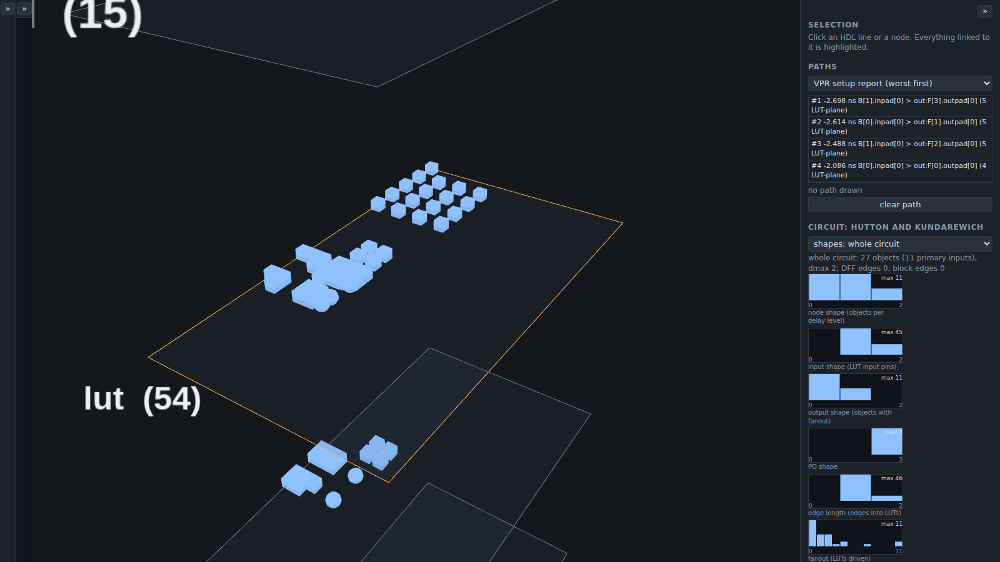
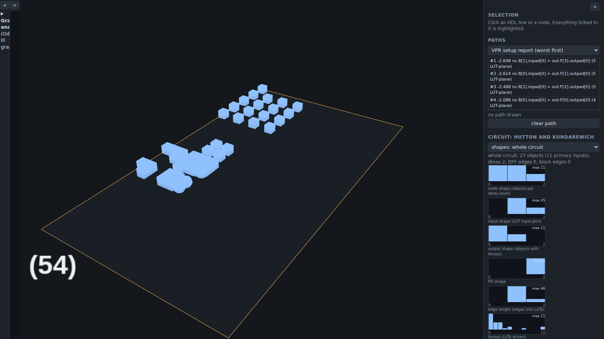
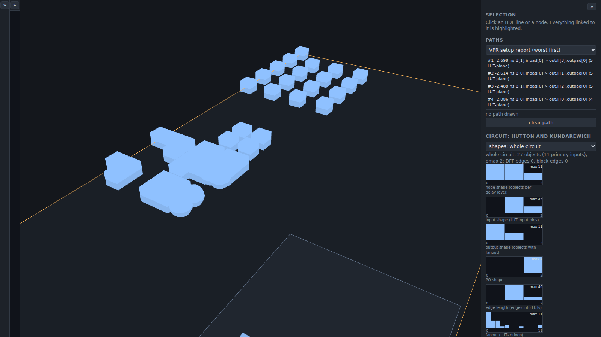
Idea. Solo a plane to count objects that overlap, and zoom to the cursor to read a crowded region of a big plane such as the placed plane of sha.
10. The 2D view and collapsible panels
Design: bm_DL_74381_ALU
Question. How do I see one plane from above, and how do I clear the screen?
- In the View menu choose 2D: lut: that plane seen from above, rotation off. Choose 3D stack to go back.
- Press [, h and ] to collapse the left panel, the HDL pane and the right panel. Press them again to restore. The state is kept in the browser.
- Press ? at any time to open the help page in a new tab.
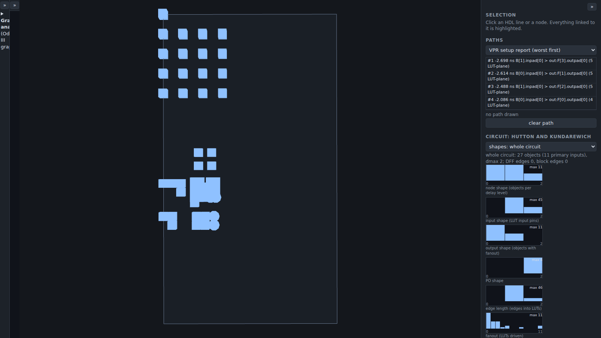
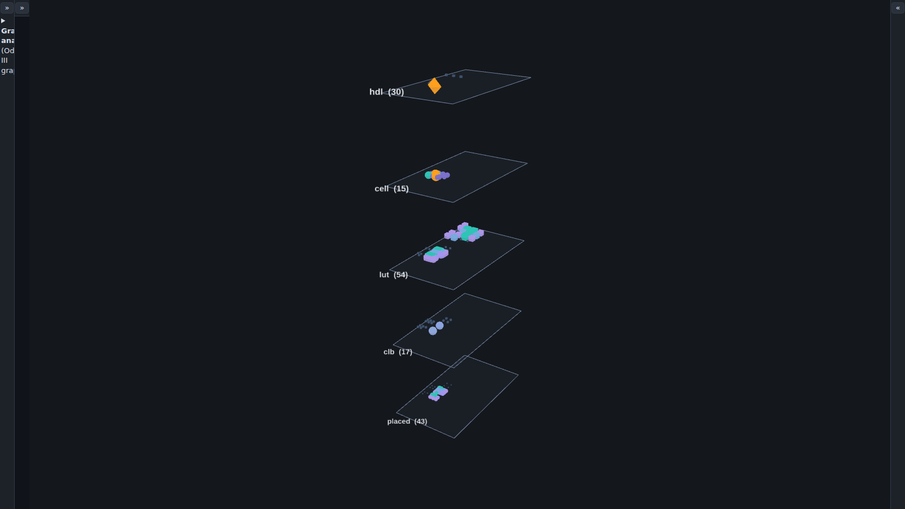
Idea. Use the 2D view for the real FPGA grid on the placed plane, where the x and y of each atom are true coordinates. Collapse the panels to take a screenshot for a paper or a talk.
11. Rainbow lines, bit squares and reverse groups
Designs: ch_intrinsics (lines), sha (bits), uart2spi (groups)
Question. Which of my lines became which object, and which bit of a bus does each object carry?
- Open ch_intrinsics and drag over lines 200 to 202 in the HDL pane. Line 200 is red, 201 green, 202 violet in the pane.
- Look at the lut plane: each LUT has the colour of the line it came from; a LUT that serves two or three lines is a pie of their colours.
- Open sha, click the bus
Ain the bus legend (Colour menu, bus), and tick Bits. Each LUT ofAgets a square: red is bit 0, violet bit 31. - Open uart2spi. Shift-click one LUT, then another: two groups, red and orange. Shift+Alt-click a third LUT to add it to the orange group. The HDL lines of each group take its colour. Esc clears.
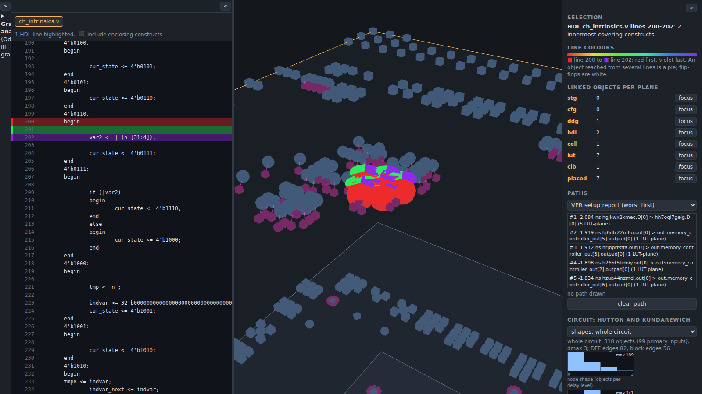
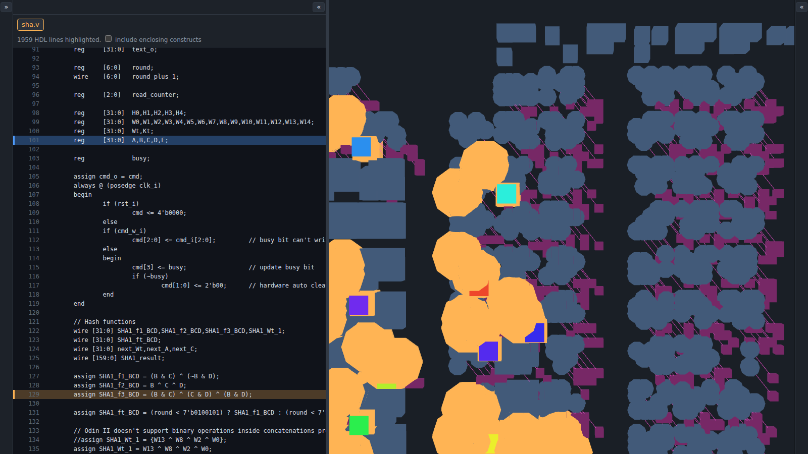
A of sha, bits on, lut plane from above: one square per LUT of A, coloured by the bit it computes. (open this view)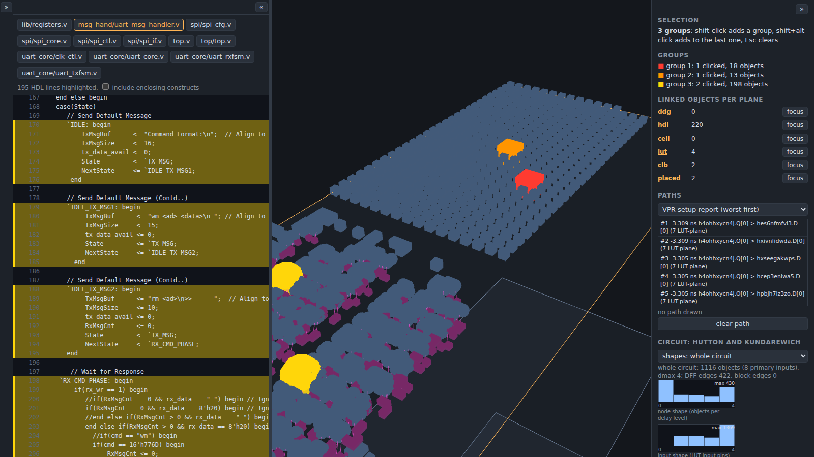
Idea. Two groups that share many HDL lines are logic that synthesis merged. A bus whose squares run red to violet in order across the placement is laid out in bit order; a scrambled order shows where placement ignored it.
Counts and numbers in the captions are read from the viewer on the bundles of this site. A value that was not measured is grey in the viewer, never a default.
12. ASIC planes: from an HDL line to the die
Design: silicon-mmuart (the OpenCores mmuart, 488 standard cells on a 135 x 135 um die), and silicon-sha3_low (17,566 cells)
Question. Which standard cells does this Verilog statement become, where are they on the chip, and how sure is the link?
- Open silicon-mmuart. The stack is
hdl,stdcell,die,route. The die plane carries an orange die outline, a core outline and the grey cell rows. - Drag over lines 187 to 190 in the pane (the receive counter). The four lines are red, orange-green, cyan and violet; each cell takes the colour of the line it came from, a cell from several lines is a pie.
- Press the focus button of the
dieplane in the right panel. The 183 cells sit in the middle of the core, the white tap cells are the regular grid. - Click one die cell. Its metrics show the library cell, area,
x_um,y_um, the row andrecover_conf; its routed wires are drawn on the die in one colour per metal layer.
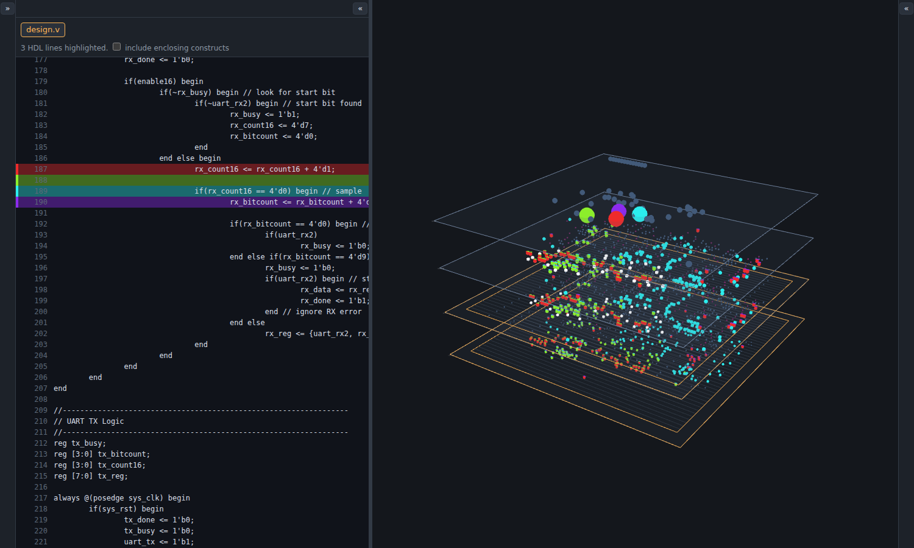
Now the big picture. Open silicon-sha3_low and show only the die plane.
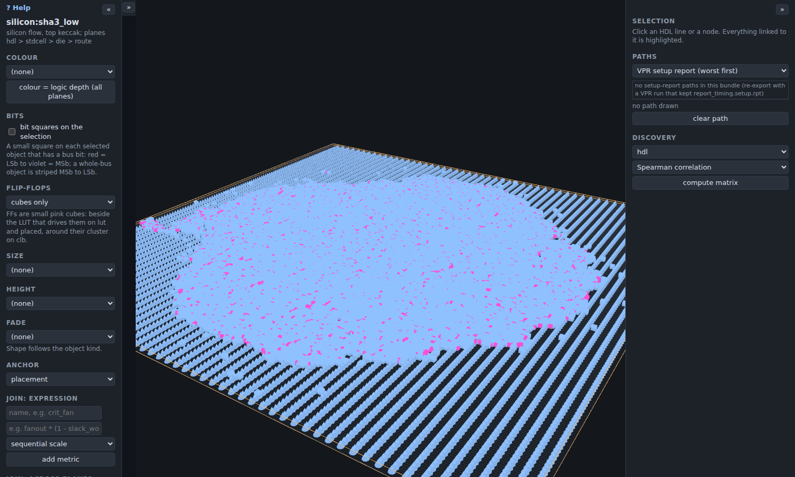
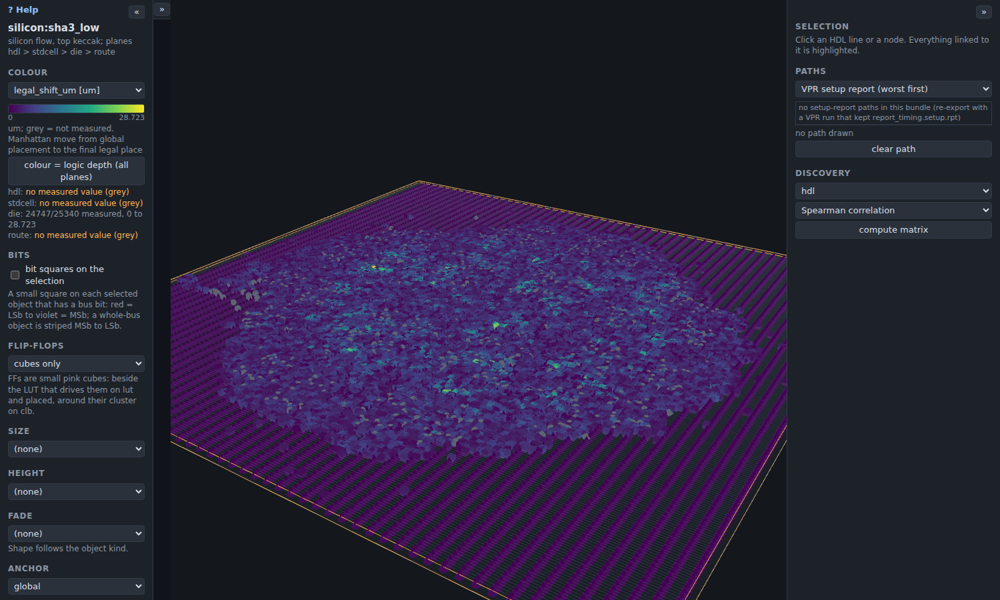
global anchor, coloured by legal_shift_um, the distance legalisation moved each cell (0 to 29 um). Most cells moved little; the bright ones moved far. (open this view)Idea. A scanned chip can be checked against its HDL: the recover_conf metric says how each placed cell was matched (by cell type and location, with no names), and the link kinds say how the chain runs back to the line.
recover_conf or area_um2, then switch the anchor to global.